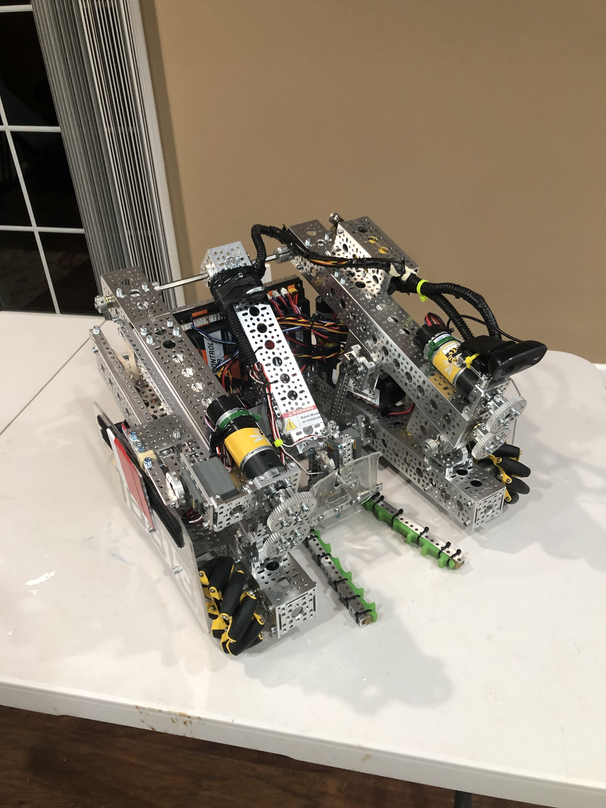

A selection of engineering and software projects focused on robotics, systems design, and problem solving. Each project highlights my approach to building, testing, and iterating on complex systems.
A web-based schedule builder designed to help University of Connecticut students easily create and visualize class schedules. The tool allows users to explore different course combinations and build conflict-free schedules in a clean, intuitive interface. The schedule generation has a three step pipeline: (1) Collecting class data, (2) Applying filters and generating schedules, (3) Displaying data on the webpage. I decided to have each phase written in a different programming language to maximize the strengths and weaknesses of each with respect to what I needed in each phase. I created python scripts to scrape all course data and store them locally for easy access. I generated the schedules in Rust to ensure that this step is as fast as possible to avoid any delay on the user side. I wrap all of this backend code under a TypeScript frontend, to ensure type safety while developing, as well as easy editing of the UI/UX.
The goal of this project is to create a tool that anyone can use, and to make it as accessible as possible. I am working on developing keyboard shortcuts to make the experience quicker for those who are interested, and I plan on adding more capabilities in the future.
I designed and developed the full application, including the UI layout, scheduling logic, and interactive features. I focused on usability, ensuring students could quickly generate and compare schedules without friction.
The project demonstrates my ability to build practical tools that solve real problems. It highlights my skills in front-end development, logical problem solving, and creating user-focused engineering solutions.
Live Preview
A machine learning application built in Scratch. This project is based off of the NEAT (Neuroevolution of Advanced Topologies) algorithm, a simple genetic algorithm designed to gradually learn the correct movements based on a given input. In this case, I chose Flappy Bird, a simple game with relatively few inputs and only one button to press: jump. I chose to make this simulation in Scratch because there are no easily obtainable libraries of code in the website. I needed to make everything myself, with all of the ideas coming from my head. In this case, each bird has its own brain, initially random, that tells it when to jump based on certain data about its position in the world, as well as the position of the closest pipe. All birds of a certain generation are simulated at the same time, and the brain of the best bird will be recorded and set as the main example for the next generation. During the new generation, all of these birds will inherit the brain of the best bird, only slightly mutated. This allows the opportunity for a more ideal brain to be created. This process then repeats until at least one bird reaches a score of 100. Then the game repeats.
I was the sole developer of this game. Since I created it in Scratch, I did not use any libraries to speed up the development process. The goal of this project was to think conceptually on how code worked, and show how every bit of data is manipulated behind the scenes. This project gave me a good understanding on the basics of machine learning and gave me key experience in creating my own library for a project.
I was involved in the First Tech Challenge robotics league for my high school. In ths league, we had to create 18"x18" robots to compete head-to-head in the game designed for that year. Each game was composed of a driver-operated period and an autonomous period, in which robots conducted pre-programmed moves to score points. Our school consisted of 5 individual teams. While we sometimes worked together and shared tips on the build/design process, the majority of the builds were done separately. I served as the Discipline Chief of Programming, where I taught new programmers from all 5 teams how to program the robots. Specifically, I helped several new programmers learn Roadrunner, a motion-planning framework that proved especially helpful for the autonomous period of the game. Those new programmers then went on to take over as Discipline Chief of Programming once I graduated. During my senior year, I was elected captain of all 5 teams. I was tasked with making sure that all teams in our school had the proper help and resources, and I provided them with all the knowledge that I gained throughout my time there. After graduating high school, I went back as a mentor to further help the team with programming, working closely with the programming team.
During my time on the team, we received 5 design awards in the state of Connecticut, and were finalist in the 2024 FTC State Championship. As the sole programmer of my team and the leader, my autonomous program allowed our team to score high in the rankings, and all of our robot designs were based on my sketches and 3d models.
